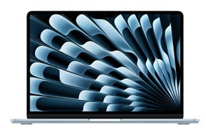

Hardware Requirements
Choose the setup that fits your needs.
Three Ways to Run KatClaw
 Dedicated Mac mini Recommended
Dedicated Mac mini Recommended
Your AI agent running 24/7. Set it and forget it.
ChipApple M4 (or M1/M2/M3)
RAM8GB minimum
Storage256GB SSD
PriceFrom US$599
✓ Pros
- Always on
- Best price/performance
- Headless operation
✗ Cons
- Dedicated hardware cost
- Another device to manage
📦 Virtual Machine (Parallels / UTM)
Run KatClaw in a macOS VM on your existing Mac.
Host MacApple Silicon
Host RAM16GB+ (8GB for VM)
Storage512GB+ SSD
VM SoftwareParallels or UTM (free)
✓ Pros
- Use existing hardware
- Easy backups
- UTM is free
✗ Cons
- Shares host resources
- Must keep host running
Allocate at least 8GB RAM and 100GB disk to your VM.
MacBook Air / MacBook Pro
Run KatClaw directly on your laptop.
ChipApple M1 or later
RAM8GB minimum
Storage256GB SSD
✓ Pros
- Direct access
- Easy debugging
- Portable
✗ Cons
- Stops when laptop sleeps
- Permission popups
Which Should You Choose?
Mac mini: 24/7 agent, set and forget.
VM: Already have a powerful Mac, want to experiment.
MacBook: Want direct access to tweak and learn.